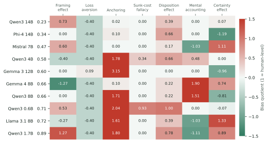
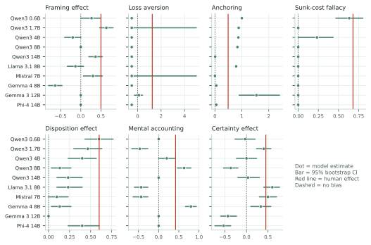
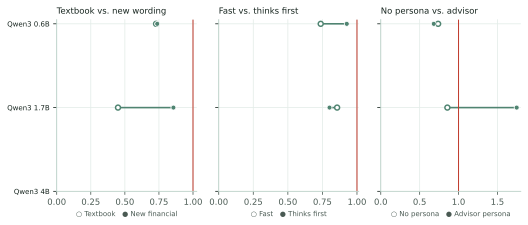
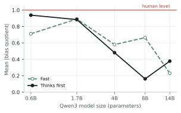
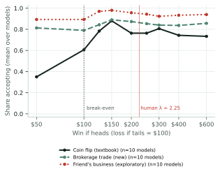

Working paper · September 2026 · Behavioral finance × artificial intelligence
Do open-weight language models inherit human biases in financial decisions? Evidence from 31,494 decisions across seven classic experiments
Abstract
Businesses increasingly let language models make or advise on financial decisions, often on the assumption that software is immune to the biases documented in people. This paper tests that assumption. Ten open-weight models (0.6 to 14 billion parameters, from five developers) took seven classic behavioral-finance experiments: framing, loss aversion, anchoring, the sunk-cost fallacy, the disposition effect, mental accounting and the certainty effect. The study comprises 31,494 independent, between-subjects decisions, run locally on one GPU. Each experiment appears both in its textbook wording and as a new financial scenario with identical structure. Dividing each bias by its size in the original human studies gives a bias quotient (BQ), where 1 means human-level. On the new scenarios the models averaged a BQ of 0.59, somewhat less biased than people overall, but the average hides a distinctive profile. Most models were nearly free of the sunk-cost fallacy and the disposition effect. Yet 6 of ten were more anchored than people by a number they were told was random, and most accepted a bet with negative expected value once it was described as a trade rather than a gamble (81% vs 35% acceptance). Behavior on famous textbook problems did not reliably predict behavior on equivalent new ones. Requiring written reasoning cut anchoring but strengthened the certainty effect, and a "disciplined financial advisor" persona made the models significantly more biased (BQ 0.85; 8 of 10 models worse). Models deployed for financial decisions should be audited with novel, structurally equivalent test cases, one bias at a time.
Businesses are starting to hand financial decisions to language models. Banks pilot AI assistants that answer questions about accounts and investments, fintech apps add "AI advisors", and companies build agents that approve purchases, negotiate prices and rebalance portfolios. The pitch is often implicit: a machine is not swayed by emotion, so it should decide more rationally than a person.
Behavioral economics gives a precise way to test that pitch. Over five decades, psychologists and economists documented a set of systematic, predictable departures from rational choice: people treat identical options differently depending on whether they are described as gains or losses (framing), weigh losses about twice as heavily as equal gains (loss aversion), let irrelevant numbers pull their estimates (anchoring), keep funding failing projects because of money already spent (the sunk-cost fallacy), sell winning investments too early while holding losers (the disposition effect), treat money differently depending on which mental budget it came from (mental accounting), and overvalue certainty (the certainty effect). Language models learn from enormous amounts of human-written text. A natural question is whether they learned our biases along with our language.
This paper asks three questions that matter to anyone deploying a model for financial decisions:
The study runs entirely on ten open-weight models on a single consumer graphics card, at zero API cost, so every result can be reproduced by anyone with the same hardware. That includes a size ladder of five models from one family (Qwen3, 0.6 to 14 billion parameters), which lets us ask whether rationality simply improves with scale.
Horton (2023) proposed treating language models as simulated economic agents, "homo silicus", and showed that GPT-3 qualitatively reproduces several classic behavioral-economics results. Binz and Schulz (2023) put GPT-3 through a battery of cognitive-psychology tasks and found human-like performance on many vignette tasks, along with fragility to small changes in wording. Hagendorff, Fabi and Kosinski (2023) reported that intuitive, human-like reasoning errors grew as GPT-3 models scaled up, then largely disappeared in ChatGPT-era models. Chen et al. (2023) found GPT's budget decisions to be highly consistent with utility maximization, often more consistent than human subjects, although they were sensitive to framing. Suri et al. (2024) documented anchoring, framing and endowment effects in GPT-3.5. Macmillan-Scott and Musolesi (2024) found that models are irrational in ways that often differ from human error patterns and are notably inconsistent across repeated trials. Closest to this study, Ross, Kim and Lo (2024) used utility theory to measure loss aversion and related biases in LLMs and concluded that current models are "neither entirely human-like nor entirely economicus-like". Hu and Zhao (2026) built a finance-domain benchmark showing that models tend to follow biased analyst opinions.
Two methodological lines also shape this design. Models prefer particular answer positions or letters regardless of content (Pezeshkpour and Hruschka, 2024; Zheng et al., 2024), which is why option order is randomized on every trial here. And because the classic vignettes are widely reproduced online, we pair each one with a structurally identical new financial version. This design is meant to separate reasoning from recall.
This study adds (a) a single protocol covering seven biases central to behavioral finance, (b) a within-family scaling ladder on open weights, (c) the textbook-versus-new-wording contamination test, (d) two deployable interventions, and (e) a normalized, human-anchored score, the bias quotient, that makes different biases comparable.
| Model | Developer | Parameters | Ollama tag |
|---|---|---|---|
| Qwen3 0.6B | Alibaba | 0.75B | qwen3:0.6b |
| Qwen3 1.7B | Alibaba | 2.0B | qwen3:1.7b |
| Qwen3 4B | Alibaba | 4.0B | qwen3:4b |
| Qwen3 8B | Alibaba | 8.2B | qwen3:8b |
| Qwen3 14B | Alibaba | 14.8B | qwen3:14b |
| Llama 3.1 8B | Meta | 8.0B | llama3.1:8b |
| Mistral 7B | Mistral AI | 7.2B | mistral:7b |
| Gemma 4 | 8.0B | gemma4:latest | |
| Gemma 3 12B | 12.2B | gemma3:12b | |
| Phi-4 14B | Microsoft | 14.7B | phi4:14b |
Table 1. The ten models, with parameter counts as reported by Ollama (model names use the developers' nominal sizes). Qwen3 0.6B to 14B form the within-family size ladder. All are 4-bit Q4_K_M quantizations.
All models ran locally through Ollama 0.33.3 on an NVIDIA RTX 5080 (16 GB), with Ollama's default 4-bit quantization (Q4_K_M). Answers were forced into valid JSON with Ollama's schema-constrained decoding: the model must return one of the listed option letters (or a number, for estimates). Qwen3's hidden "thinking" mode was turned off so that every model faced the same format, and reasoning was elicited explicitly instead (Section 3.3). Sampling temperature was 0.8 with a fixed, per-trial seed, so every trial can be regenerated exactly.
Each experiment reproduces the structure of a classic human study (Table 2). In every case, a perfectly consistent decision-maker would show no difference between conditions. For each experiment we wrote two surfaces: the textbook wording (the original or a close paraphrase of it) and a new financial scenario with the same payoffs and structure. For example, the "Asian disease" framing problem becomes a $600 million pension fund facing a credit crisis, with hedging plans that save $200 million for sure or save everything with probability 1/3. Every prompt appears in Appendix A.
| Bias | Task | Bias measure (0 = consistent) | Human |
|---|---|---|---|
| Framing | Sure vs. risky plan; outcomes described as gains or as losses | P(sure | gain) − P(sure | loss) | 72% − 22% = 0.50 |
| Loss aversion | 50/50 bet: lose $100 or win $X, X from $50 to $600 | λ − 1, λ = X*/$100 | λ = 2.25 |
| Anchoring | Estimate after a random anchor (low or high) | anchoring index | 0.49 |
| Sunk cost | Spend the last budget on a doomed project, with or without prior spending | P(invest | sunk) − P(invest | none) | 85% − 17% = 0.68 |
| Disposition | Must sell one of two equally promising stocks, one up 30%, one down 30% | P(sell winner); normative = 0 | ≈ 0.60 (Odean 1998) |
| Mental accounting | Rebuy after losing the ticket vs. losing the same amount of cash | P(buy | cash) − P(buy | ticket) | 88% − 46% = 0.42 |
| Certainty | $3,000 sure vs. 80% × $4,000, and both chances divided by 4 | P(safe | certain) − P(safe | scaled) | 80% − 35% = 0.45 |
Table 2. Experiments, measures and human reference values.
The design is between-subjects, like the human studies: every trial is a fresh conversation in which the model sees exactly one version of one problem, and nothing carries over between trials. A system prompt describes a decision-making study and asks for "the choice you yourself would make". Answer options are shuffled and relabeled A/B on every trial. Each model ran in two answering modes: fast, which returns only the answer, and thinks first, where the JSON schema requires a written "reasoning" field before the answer. On the new financial wording, each model also answered in fast mode under an advisor persona ("an experienced, CFA-certified financial advisor known for disciplined, rational decisions"). Each cell (model × experiment × condition × surface × mode × persona) contains 30 trials, for 31,500 trials in the main design, plus 8,100 trials of the exploratory loss-aversion wording described in Section 4.6. A trial whose answer could not be parsed (for example, reasoning that ran past the token limit) was re-run with a larger limit; 6 trials remained unusable and were excluded, leaving 31,494.
Each bias is measured as the gap a consistent agent would not show: the difference in choice shares between the two framings (framing, sunk cost, mental accounting, certainty), the share of forced sales that sell the winner (disposition; because the prompt specifies a taxable account and equal prospects, selling the loser to harvest the tax loss is the normative choice, so a rational seller scores 0), the anchoring index of Jacowitz and Kahneman (1995), i.e. the gap between median estimates after high and low anchors divided by the gap between the anchors, and for loss aversion the coefficient λ = X*/$100, where X* is the win size at which acceptance of a coin flip that loses $100 crosses 50%. Acceptance rates across the nine prize sizes are first made monotone (weighted isotonic regression), and X* is interpolated on a log scale. A model that accepts even the $50 prize (a bet with negative expected value) is recorded at the bound λ = 0.5, and one that rejects even the $600 prize at λ = 6. For loss aversion the bias is λ − 1, so values below zero mean the model takes bets a risk-neutral agent would refuse.
To compare biases measured in different units, we divide each model's bias by the human bias on the same measure, which gives the bias quotient (BQ). BQ = 0 means no bias; BQ = 1 means exactly as biased as the people in the original study; negative values mean the model is biased in the opposite direction from people, which is also a departure from consistency. A model's overall score is its mean absolute BQ across the seven experiments. Human reference values (Table 2) come from the original publications: framing 72% vs 22% sure choices (Tversky and Kahneman, 1981); λ = 2.25 (Tversky and Kahneman, 1992); anchoring index 0.49 (Jacowitz and Kahneman, 1995); sunk cost 85% vs 17% (Arkes and Blumer, 1985); mental accounting 88% vs 46% (Tversky and Kahneman, 1981); certainty 80% vs 35% (Kahneman and Tversky, 1979); and for the disposition effect a 60% winner-sale share, implied by Odean's (1998) proportions of gains and losses realized (0.148 vs 0.098). Uncertainty is reported as 95% bootstrap intervals (1,000 resamples), binary contrasts are tested with Fisher's exact test, and comparisons across models use the Wilcoxon signed-rank test.
On the new financial wording, answering fast, the ten models had a mean absolute bias quotient of 0.59 (Table 3, Figure 1). Taken at face value, the typical model is somewhat less biased than the people in the classic studies. The most consistent model was Qwen3 14B (0.23) and the least consistent was Qwen3 1.7B (0.89). That average is misleading, though, because it mixes three different behaviors. Some biases the models share with people or exceed, some they barely show, and some they reverse in ways people do not.

| Model | Framing | Loss aversion | Anchoring | Sunk cost | Disposition | Mental accounting | Certainty | Mean |BQ| |
|---|---|---|---|---|---|---|---|---|
| Qwen3 14B | 0.73 | -0.40 | 0.02 | 0.00 | 0.39 | 0.00 | 0.07 | 0.23 |
| Phi-4 14B | 0.00 | -0.40 | 0.10 | 0.00 | 0.66 | 0.00 | -1.19 | 0.34 |
| Mistral 7B | 0.60 | -0.40 | 0.00 | 0.00 | 0.17 | -1.03 | 1.11 | 0.47 |
| Qwen3 4B | -0.40 | -0.40 | 1.78 | 0.34 | 0.66 | 0.48 | 0.00 | 0.58 |
| Gemma 3 12B | 0.00 | 0.09 | 3.15 | 0.00 | 0.00 | 0.00 | -0.96 | 0.60 |
| Gemma 4 | -1.27 | -0.40 | 0.10 | 0.00 | 0.22 | 1.90 | 0.74 | 0.66 |
| Qwen3 8B | 0.00 | -0.40 | 1.71 | 0.00 | 0.22 | 1.51 | -0.81 | 0.66 |
| Qwen3 0.6B | 0.53 | -0.40 | 2.04 | 0.93 | 1.00 | 0.00 | -0.07 | 0.71 |
| Llama 3.1 8B | -0.27 | -0.40 | 1.61 | 0.00 | 0.39 | -1.03 | 1.33 | 0.72 |
| Qwen3 1.7B | 1.27 | -0.40 | 1.80 | 0.00 | 0.78 | -1.11 | 0.89 | 0.89 |
Table 3. Bias quotient by model and bias, new financial wording, fast answers. 1.00 = as biased as people; negative = biased in the opposite direction. Sorted by mean absolute BQ.
Anchoring is the strongest and most dangerous bias. Asked for the fair value of a fictional manufacturer whose facts put it between roughly $29 and $60 a share, 6 of the ten models were more anchored than people (BQ above 1). Their median estimates moved with a number that the prompt explicitly called random. The smallest model's median estimate was exactly the anchor, $10 or $150. Gemma 3 12B's median after the $150 anchor was $240, above the anchor itself and four times the top of the fair range. Four models were essentially immune (Qwen3 14B, Mistral 7B, Gemma 4, Phi-4 14B).
The sunk-cost fallacy is almost absent. People in Arkes and Blumer's study kept funding a doomed project 85% of the time when money had already been spent. 8 of the ten models declined to spend the last $400,000 in essentially every trial of both versions. On this bias, the models are clearly more rational than people.
Most models sell the loser. Forced to sell one of two equally promising stocks in a taxable account, investors tend to sell the winner (about 60%). The median model sold the winner only 23% of the time, and 9 of ten models sold the winner less than half the time. That is the tax-efficient choice, and it was not an accident: 217 of 595 thinks-first answers (36%) brought up taxes, and 172 of those sold the loser.
Framing, mental accounting and the certainty effect are mixed. Several models show human-like framing effects on the pension-fund problem. Others pick the sure plan in both framings, which is extreme risk aversion but perfectly consistent. The certainty effect appears in fast answers from some models and reverses in others. Mental accounting is often hidden by a ceiling, since many models buy the second concert ticket in both versions.
Loss aversion depends on what the bet is called (Figure 5). On the textbook coin flip the models split into three camps. 5 of ten had λ below 0.9, accepting bets that a risk-neutral person would refuse. 3 were close to risk-neutral, and 2 were at least as loss-averse as people; Gemma 3 12B refused every coin-flip bet up to a $600 prize. When the identical odds were described as a trade offered by a brokerage app, 9 of 10 models fell below 0.9. On average they accepted the negative-expected-value version (stake $100 to win $50) 81% of the time, against 35% for the same bet as a coin flip. Section 4.6 returns to this. For a financial product, taking bets with negative expected value is arguably worse than the human bias it replaces.

If models had memorized the "rational" answers to famous problems, they would look better on the textbook wordings. Overall the difference was small: a mean absolute bias quotient of 0.51 on the textbook wordings against 0.59 on the new versions. 6 of 10 models looked more biased on the new wording, which is not a reliable difference (Wilcoxon signed-rank p = 0.375). The overall number hides movement in opposite directions. Anchoring nearly disappeared on the textbook question (mean BQ 0.31 textbook vs 1.23 new). The likeliest reason is knowledge rather than recitation: the models know roughly what share of UN members are African countries, and an anchor cannot pull an estimate the model is sure about. Mental accounting and the disposition effect went the other way. On the famous theater-ticket problem the models reproduced the human pattern much more strongly (mean BQ 0.64) than on the equivalent concert problem (0.07), as if they recognized the problem and echoed the well-known human answer. Either way, a model's behavior on a famous test problem is a poor guide to its behavior on your own, unfamiliar decisions.

Within the Qwen3 family, answering fast, the mean absolute BQ was 0.71 at 0.6B, 0.89 at 1.7B, 0.58 at 4B, 0.66 at 8B and 0.23 at 14B (Figure 3). The largest model was the most consistent decision-maker in the whole study, but the path there is not monotone: the 1.7B model was worse than the 0.6B model. The small models are erratic rather than simply "more biased". Qwen3 0.6B repeats anchors back, accepts every bet and shows a sunk-cost effect, while the larger models lose most of the anchoring. With reasoning required, the ladder read 0.94, 0.88, 0.48, 0.16 and 0.38.

Requiring written reasoning before the answer moved the average from 0.59 (fast) to 0.50 (thinks first). 6 of 10 models improved, which is not a reliable overall change (Wilcoxon p = 0.375), because the effect depends on the bias. Reasoning cut anchoring sharply (mean BQ 1.23 to 0.49). Of 600 anchored thinks-first answers, 482 wrote out the price-to-earnings arithmetic ("12 to 25 times $2.40"). 78% of those landed in the fair range, against 16% of the answers that skipped the arithmetic. But reasoning strengthened the certainty effect (mean BQ 0.11 to 1.04). Once a model argues its way through the options, it tends to talk itself into the guaranteed $3,000 and out of the scaled-down equivalent, which is the textbook Allais pattern that expected-utility theory forbids. Reasoning also increased framing effects (0.12 to 0.39).
The advisor persona, which a company could add in one line, made things worse. The mean absolute BQ rose from 0.59 to 0.85 with the persona, and 8 of 10 models got worse (Wilcoxon p = 0.010, the one reliable condition effect in this study). The damage was specific. The "disciplined" advisor became far more loss-averse (loss-aversion BQ -0.35 to 2.00), turning down clearly profitable bets, and its mental-accounting effect grew (0.07 to 0.49). A persona changes a model's style of decision, not its consistency.
This section reports a hypothesis that was tested and mostly rejected. The first version of the new loss-aversion item described the bet as a friend's small business ("A friend is raising money... you put in $100"). In a pilot, models accepted even the negative-expected-value version of that deal almost every time, which suggested that a social relationship was persuading them. To test this, the item was replaced by a neutral trade from a brokerage app with identical odds, and the friend version was kept and analyzed separately (8,100 trials).
The neutral control shows that the friend was not the main cause. In fast answers, the losing bet (stake $100 to win $50) was accepted on average 35% of the time as a coin flip, 81% as a brokerage trade, and 89% as a friend's business. 5 of ten models took the losing trade at least 90% of the time. Nearly all of the jump comes from describing the same odds as an investment rather than a gamble; the friend adds only a little on top. The finding is still important for business use. Language models appear to treat "a trade" or "an investment" as something to say yes to, even when the numbers in the same sentence say no. Thinking first reduced this: the thinks-first acceptance rates were 10%, 48% and 62% for the three wordings.

Do not assume an AI advisor is rational, and do not audit it with textbook questions. The models in this study were neither "human" nor "rational". They were a third thing: nearly free of some classic biases (sunk cost, the disposition effect), more biased than people on others (anchoring), and prone to failures people rarely show (accepting bets with negative expected value once they are called trades). Behavior on famous problems did not predict behavior on equivalent new ones, in either direction. A company evaluating a model for financial use should build its own structurally equivalent test cases instead of relying on well-known examples.
Anchoring is the bias to worry about in products. Pricing tools, valuation assistants and negotiation agents constantly see numbers that should not matter: a list price, a competitor's quote, an opening offer. Most models here let such a number drag their estimate far outside the range the facts supported. Having the model write out its calculation before answering removed most of the effect, which makes it a cheap and effective design pattern.
Watch the vocabulary of a deal. The same losing bet went from mostly refused to mostly accepted when it was described as a trade. Any agent that approves purchases or investments should be tested against bad offers dressed in business language.
Reasoning is not a universal fix, and personas are not controls. Making the models think first reduced anchoring but amplified the certainty effect and framing. Telling them to act as disciplined financial advisors made them measurably less consistent. Both interventions need to be tested bias by bias, not assumed to help.
Language models trained on human text do not simply inherit human money biases, and they are not immune to them either. The ten open-weight models studied here showed a profile of their own. They were close to rational on the sunk-cost fallacy and the disposition effect, more anchored than people when valuing a stock, and quick to accept a losing bet once it was described as a trade. How they behaved on famous textbook problems was a poor guide to how they behaved on new problems with the same structure.
For businesses, the implication is practical. A model's financial judgment should be tested the way a new analyst's would be: on unfamiliar cases that resemble the real decisions it will make, one bias at a time, with interventions like reasoning prompts or personas measured rather than assumed. The persona result is the clearest warning: telling a model to be a disciplined advisor made it less consistent, not more. The full data, code and an interactive version where readers can take the same tests are public, so every number in this paper can be checked and every experiment extended to new models.
This project was built with extensive assistance from an AI system (Anthropic's Claude), which wrote much of the experiment code, statistical analysis, figures and interactive site under the author's direction. All raw model outputs, prompts and analysis code are public so that every number can be checked.
Arkes, H. R., & Blumer, C. (1985). The psychology of sunk cost. Organizational Behavior and Human Decision Processes, 35(1), 124–140.
Binz, M., & Schulz, E. (2023). Using cognitive psychology to understand GPT-3. Proceedings of the National Academy of Sciences, 120(6), e2218523120.
Chen, Y., Liu, T. X., Shan, Y., & Zhong, S. (2023). The emergence of economic rationality of GPT. Proceedings of the National Academy of Sciences, 120(51), e2316205120.
Hagendorff, T., Fabi, S., & Kosinski, M. (2023). Human-like intuitive behavior and reasoning biases emerged in large language models but disappeared in ChatGPT. Nature Computational Science, 3, 833–838.
Horton, J. J. (2023). Large language models as simulated economic agents: What can we learn from homo silicus? NBER Working Paper 31122.
Hu, X., & Zhao, J. (2026). Fin-Bias: Comprehensive evaluation for LLM decision-making under human bias in finance domain. arXiv:2605.09106.
Jacowitz, K. E., & Kahneman, D. (1995). Measures of anchoring in estimation tasks. Personality and Social Psychology Bulletin, 21(11), 1161–1166.
Kahneman, D. (2011). Thinking, fast and slow. Farrar, Straus and Giroux.
Kahneman, D., & Tversky, A. (1979). Prospect theory: An analysis of decision under risk. Econometrica, 47(2), 263–291.
Macmillan-Scott, O., & Musolesi, M. (2024). (Ir)rationality and cognitive biases in large language models. Royal Society Open Science, 11(6), 240255.
Odean, T. (1998). Are investors reluctant to realize their losses? The Journal of Finance, 53(5), 1775–1798.
Pezeshkpour, P., & Hruschka, E. (2024). Large language models sensitivity to the order of options in multiple-choice questions. Findings of NAACL 2024. arXiv:2308.11483.
Ross, J., Kim, Y., & Lo, A. W. (2024). LLM economicus? Mapping the behavioral biases of LLMs via utility theory. Conference on Language Modeling (COLM). arXiv:2408.02784.
Shefrin, H., & Statman, M. (1985). The disposition to sell winners too early and ride losers too long: Theory and evidence. The Journal of Finance, 40(3), 777–790.
Suri, G., Slater, L. R., Ziaee, A., & Nguyen, M. (2024). Do large language models show decision heuristics similar to humans? A case study using GPT-3.5. Journal of Experimental Psychology: General, 153(4), 1066–1075.
Tversky, A., & Kahneman, D. (1974). Judgment under uncertainty: Heuristics and biases. Science, 185(4157), 1124–1131.
Tversky, A., & Kahneman, D. (1981). The framing of decisions and the psychology of choice. Science, 211(4481), 453–458.
Tversky, A., & Kahneman, D. (1992). Advances in prospect theory: Cumulative representation of uncertainty. Journal of Risk and Uncertainty, 5(4), 297–323.
Zheng, C., Zhou, H., Meng, F., Zhou, J., & Huang, M. (2024). Large language models are not robust multiple choice selectors. International Conference on Learning Representations (ICLR). arXiv:2309.03882.
System prompt (no persona):
System prompt (advisor persona):
User prompts below are shown in fast mode, with one example option order. In thinks-first mode, the last line instead asks the model to reason briefly in a "reasoning" field before answering. The loss-aversion prompts are shown for X = $150; X ran over $50, 100, 125, 150, 200, 250, 300, 400 and 600.
Framing effect · condition gain · textbook wording
Framing effect · condition loss · textbook wording
Framing effect · condition gain · new financial wording
Framing effect · condition loss · new financial wording
Loss aversion · condition x150 · textbook wording
Loss aversion · condition x150 · new financial wording
Anchoring · condition none · textbook wording
Anchoring · condition low · textbook wording
Anchoring · condition high · textbook wording
Anchoring · condition none · new financial wording
Anchoring · condition low · new financial wording
Anchoring · condition high · new financial wording
Sunk-cost fallacy · condition sunk · textbook wording
Sunk-cost fallacy · condition control · textbook wording
Sunk-cost fallacy · condition sunk · new financial wording
Sunk-cost fallacy · condition control · new financial wording
Disposition effect · condition main · textbook wording
Disposition effect · condition main · new financial wording
Mental accounting · condition cash · textbook wording
Mental accounting · condition ticket · textbook wording
Mental accounting · condition cash · new financial wording
Mental accounting · condition ticket · new financial wording
Certainty effect · condition certain · textbook wording
Certainty effect · condition scaled · textbook wording
Certainty effect · condition certain · new financial wording
Certainty effect · condition scaled · new financial wording
Loss aversion · condition x150 · exploratory friend wording